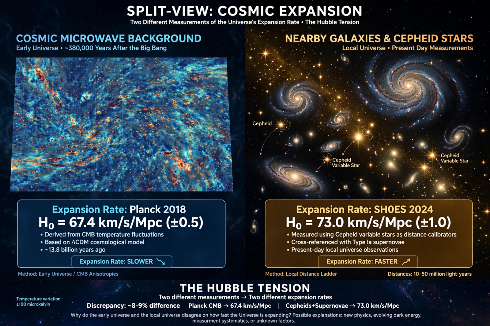

The Hubble tension is a discrepancy in cosmology between two ways of measuring the Hubble constant, H0 — the present-day expansion rate of the universe. Measurements based on the local cosmic distance ladder give values around 73 km/s/Mpc, while values inferred from observations of the early universe, principally the cosmic microwave background analyzed within the ΛCDM model, give about 67.4 km/s/Mpc. The disagreement has grown to a statistical significance of roughly 5σ and is regarded as one of the most serious problems in modern cosmology.
Late universe. The SH0ES collaboration and similar teams calibrate standard candles — Cepheid variable stars and Type Ia supernovae — using geometric distances, including parallaxes from Gaia and the Hubble Space Telescope, and derive H0 ≈ 73 km/s/Mpc with about 1% precision.
Early universe. The Planck satellite's measurements of the cosmic microwave background, interpreted through the standard ΛCDM model, predict H0 ≈ 67.4 ± 0.5 km/s/Mpc. Baryon acoustic oscillation data combined with big bang nucleosynthesis give a similar value.
Explanations fall into three groups: unrecognized systematic errors in one of the measurements (for example, crowding or metallicity effects in Cepheid photometry); new physics that changes the expansion history before recombination, such as early dark energy, which shrinks the sound horizon; and modifications to the late-time universe, such as evolving dark energy or interacting dark matter. Independent distance indicators — the tip of the red giant branch, gravitational-wave standard sirens, and strong-lensing time delays — have so far given intermediate or mixed results.
Observations with the James Webb Space Telescope have largely confirmed the Hubble Space Telescope's Cepheid photometry, weakening the simplest systematic-error explanations, though debate continues. Whether the tension signals physics beyond ΛCDM remains unresolved.